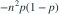

n 次独立抛硬币，正面概率 p，正反面次数分别为 X、Y。 是？
是？
是？- A
- B0
- C
- D

我已思考，展开答案与解析
正确答案：A
- ，故 。
- 而 ，方差为 。
易错提醒试验彼此独立，但总正面数与总反面数完全负相关。
JYSG · 432精选 · 册内清华大学432·2026年·一(4)；PDF第118页（印刷页116）
原大题拆解
是？
JYSG · 432精选 · 册内清华大学432·2026年·一(4)；PDF第118页（印刷页116）
原大题拆解